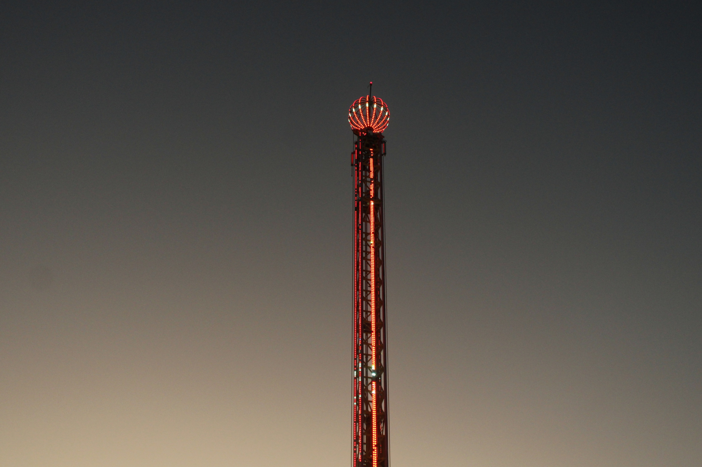
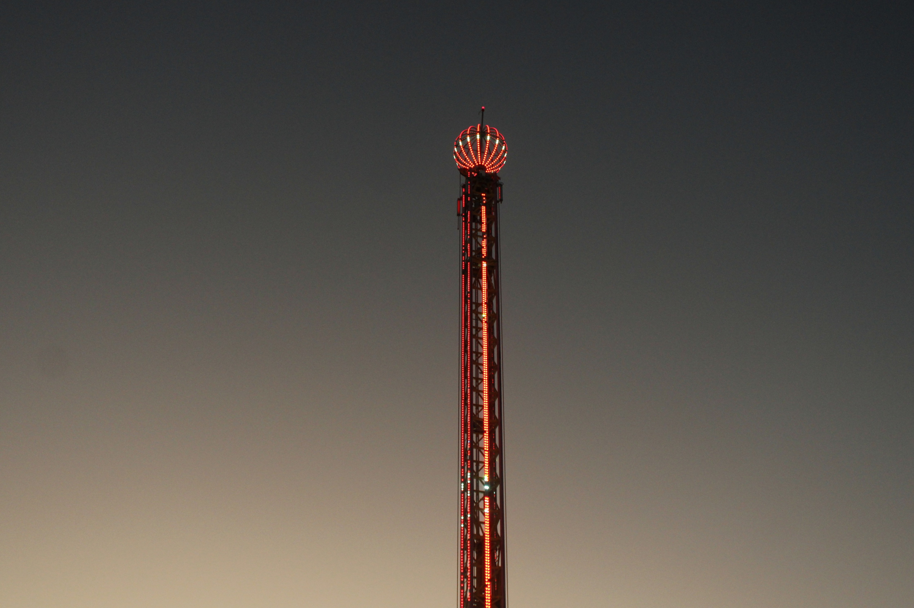

Mi Trabajo en Fotografía


La fotografía es mi pasión. A través de mi lente, capturo momentos únicos, emociones y paisajes que cuentan historias. Explora mi colección de fotografías, donde cada imagen tiene un significado especial.
Volver al PortafolioTécnicas Fotográficas
Utilizo diversas técnicas para lograr resultados únicos en mis fotografías, como:
- Fotografía de larga exposición: Para capturar movimiento y luz de manera creativa.
- Paisajismo: Capturando la belleza de la naturaleza en su máxima expresión.
Equipo Utilizado
Trabajo con herramientas profesionales para garantizar la mejor calidad en mis fotografías:
- Cámara digital: Canon EOS.
- Lentes: 50mm f/1.8, 24 ,, f/2.8, y 70-200mm f/2.8.
Fotografía con Película de 35 mm
Además de la fotografía digital, también disfruto capturando momentos con mi Canon AE-1 Program, una cámara clásica de película de 35 mm. Esta cámara me permite experimentar con la textura y el carácter único que solo la película puede ofrecer.
Algunas de las películas que he utilizado incluyen:
- Fujifilm 400: Perfecta para fotografía callejera y paisajes.
- Ilford: Para un look clásico en blanco y negro.
Proyectos Destacados
Algunos de mis proyectos más significativos incluyen:
- "Rostros de la Ciudad": Una serie de retratos que capturan la diversidad cultural de mi ciudad.
- "Naturaleza Viva": Un proyecto dedicado a la conservación de paisajes naturales.
- "Luces Nocturnas": Fotografías de larga exposición en entornos urbanos.
Galería Adicional
 


Explora más de mi trabajo en esta galería adicional, donde cada imagen tiene una historia que contar.